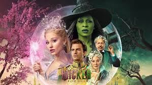

Wicked : For Good
The Highest Grossing Musical Adaptation
Wicked for good tells the story of Elphaba, a smart and misunderstood girl born with green skin, who forms an unlikely friendship with the popular and ambitious Glinda at Shiz University. After discovering that the Wizard of Oz is secretly oppressing the talking Animals of the land, Elphaba refuses to support him and is framed as the “Wicked Witch,” while Glinda stays aligned with the Wizard’s world and becomes publicly known as “Glinda the Good.” Their choices put them on opposite sides of Oz’s politics, but their bond remains powerful. As events twist toward the familiar Wizard of Oz storyline, Elphaba is hunted, misunderstood, and ultimately forced to fake her death to escape with the man she loves. Glinda, believing Elphaba to be gone, is left to lead Oz and try to undo the damage. In the end, both women are forever changed by their friendship, shaping who they become for good.
Box office records
Top 5 musical to Movie adaptains with Box office records 2025
- Wicked:For Good - $150 million
- Wicked: Part On - $112.5 million
- Les Misérables — $27.3M
- Mamma Mia! Here We Go Again — $34.9M
- Into the Woods — $31M
Wicked: For Good has quickly become one of the most significant film events of the year, building on the massive success of the first Wicked movie and expanding the cinematic interpretation of the beloved Broadway musical. Directed again by Jon M. Chu, the sequel continues the story of Elphaba and Glinda, reuniting Cynthia Erivo and Ariana Grande in their iconic roles. The film serves as the conclusion to the two-part adaptation and brings to life the emotional and dramatic material from the second act of the stage production. From the moment it debuted, Wicked: For Good entered the cultural conversation with an energy that suggested not only commercial strength but also widespread fan excitement.
The film broke numerous box-office records right out of the gate. On its opening weekend in the United States alone, it earned approximately $150 million, the largest domestic opening ever for a movie based on a Broadway musical. Internationally, the film posted a global opening total of more than $225 million, edging out the debut numbers of its predecessor and securing one of the top global openings of the year. Its first Friday alone amounted to nearly $70 million in domestic earnings. Beyond that, the film also set a studio record for IMAX revenue for a November release, with premium-format screenings accounting for an unusually large percentage of ticket sales. Industry analysts noted that Wicked: For Good arrived at an ideal time in the box-office calendar, when audiences were eager for a major theatrical event.
Several factors have contributed to this remarkable commercial success. One major influence is the goodwill carried over from the first film, which cultivated a massive fan base and reignited interest in the Wicked universe after years of anticipation. Another element is timing: the industry had seen a drought of large-scale hits earlier in the year, leaving the marketplace open for a major musical fantasy to dominate. Analysts also observed a distinct audience trend, with a heavily female-skewing turnout during opening weekend and a noticeable surge in IMAX and other premium screenings. This combination of loyal fans, theatrical demand, and smart positioning helped the film outperform nearly all early projections.
Critically, Wicked: For Good has received somewhat mixed but generally positive reviews. Many critics praised the performances—especially Erivo’s intensity and Grande’s evolution in the role of Glinda—as well as the scale, visual effects, and emotional impact of the story. Others felt that the sequel was constrained by the massive expectations set by the first film or that its darker tone made it feel less vibrant and self-contained. Despite these critiques, audiences have embraced the movie much more enthusiastically. Early audience polling rated it extremely high, with CinemaScore awarding the film an “A,” and exit-survey groups reporting more than 90 percent positive reactions and very strong word-of-mouth indicators. This kind of audience love mirrors the original film’s response, even if critics remain more divided.
Online reactions show a wide range of emotions, from ecstatic praise to thoughtful concern. Many fans expressed relief and joy that the second installment delivered a satisfying and emotionally strong conclusion to the story, especially given the skepticism some viewers had when the decision was made to divide the adaptation into two films. Viewers have highlighted the performances, the music, and the visual effects as standout elements. Others acknowledged that the film’s heavier themes and more somber tone might make it less rewatchable for some audiences compared to the first movie. Discussions on fan forums and social media frequently mention that while audiences overwhelmingly enjoyed the experience, the sequel’s darker emotional core could affect its long-term box-office “legs.”